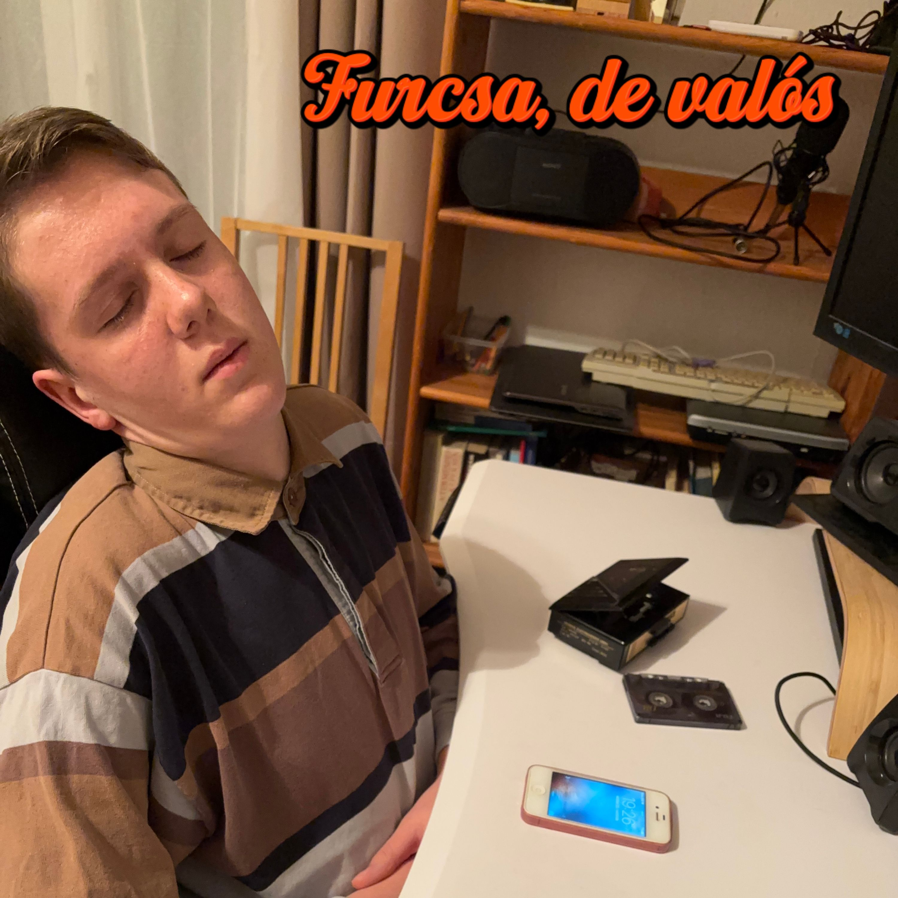
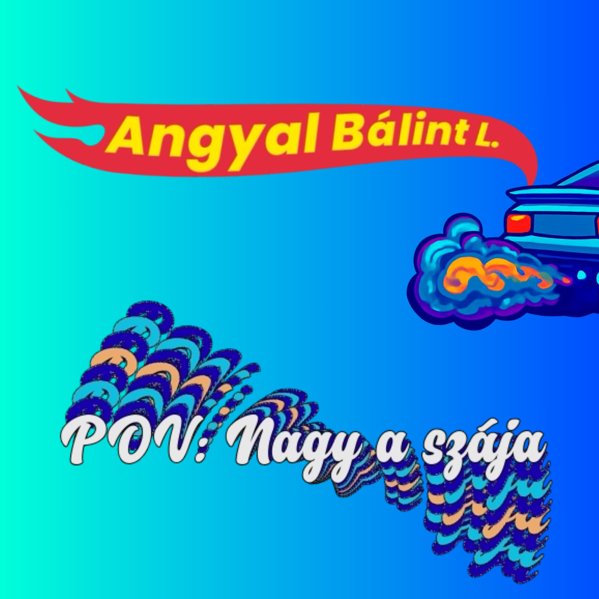

Verse 1:
Azt hiszed, hogy nem valós,
Hát rosszul gondolod,
Bizony régen volt,
Mert kihalt ez a dolog.
Refrén:
Régen sokminden más volt,
Hiába furcsa manapság,
Gladiátorokból való,
Vér az gyógyszer volt anno,
Fiatalokból származó,
Epilepsziára ható.
Verse 2:
Nem volt akkor mosószer,
Mosógép sem még,
Vizelet volt a kulcs,
Ami fullókból való,
Azzal mosták például,
A gyapjútógákat,
Ez volt akkoriban,
A mosószer világa.
Verse 1:
Te aztán nekem mondod a magadét,
Belém is ütsz, én asszondom atyaég,
Azt hiszed, hogy ezt komolyan értettem,
Irónia volt ez, hát ezt is miért tettem,
Úgy érzed, mintha boxmeccsen lennél,
Te aztán engem még le is kennél,
A földre, meg a falra, mint egy festmény,
Úgy viselkedsz, mint egy hatalmas kemény.
Refrén:
Nyugodtan csináld tovább, ez a beszéd,
Te neked fog fájni nem soká, mer’ én,
Nem állok bele ebbe a dumába,
Ilyenkor neki is jár a szája,
Aztán neked állj feljebb, megint,
Mert te kapsz ezért a hazádtól verést.

